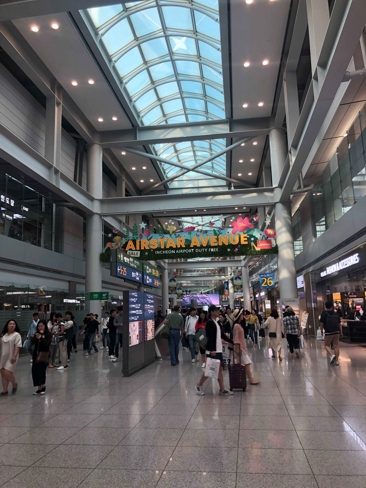
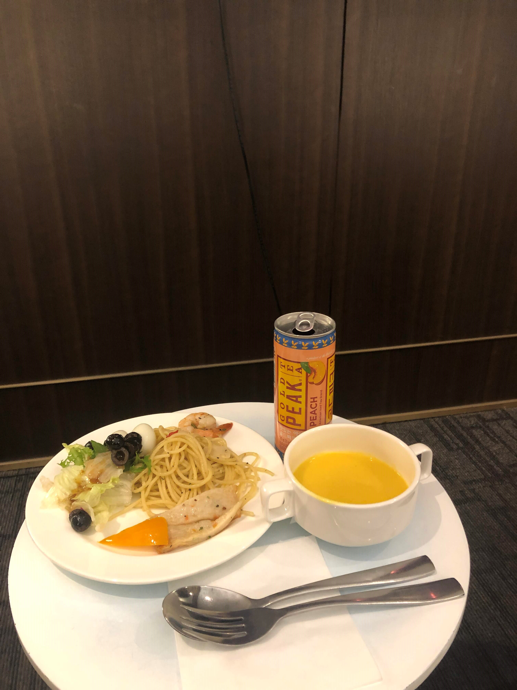
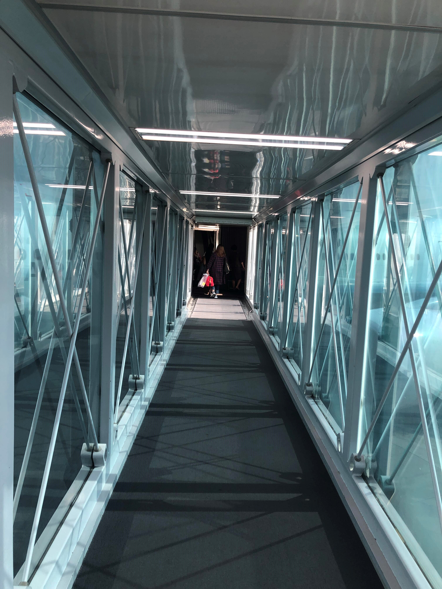
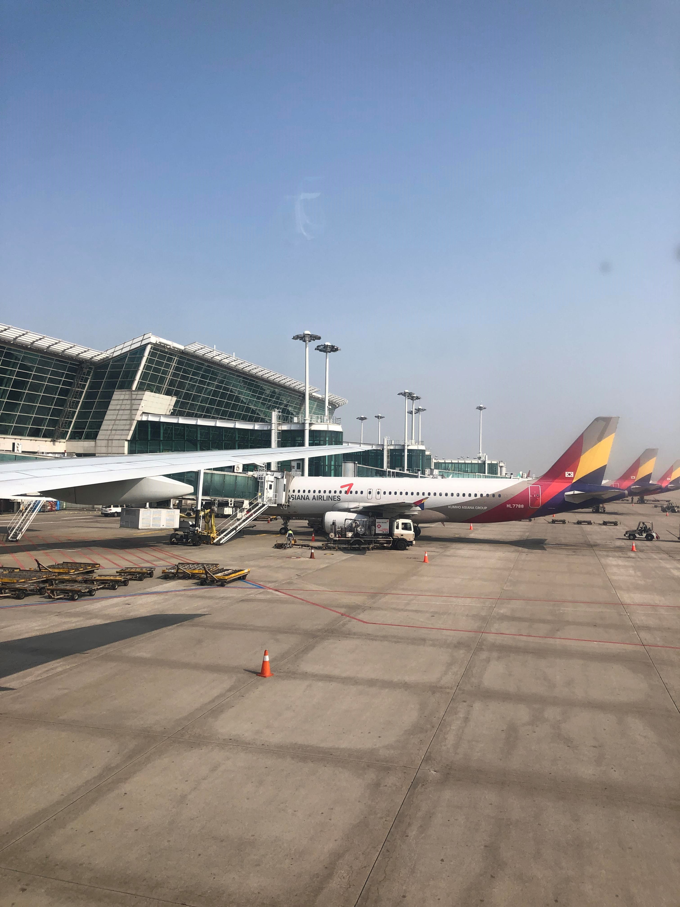
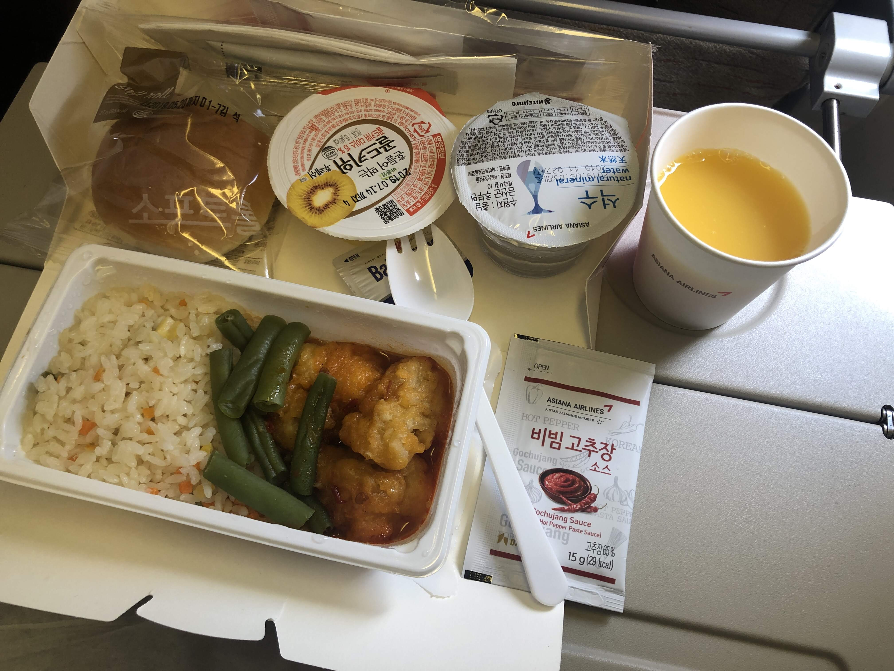
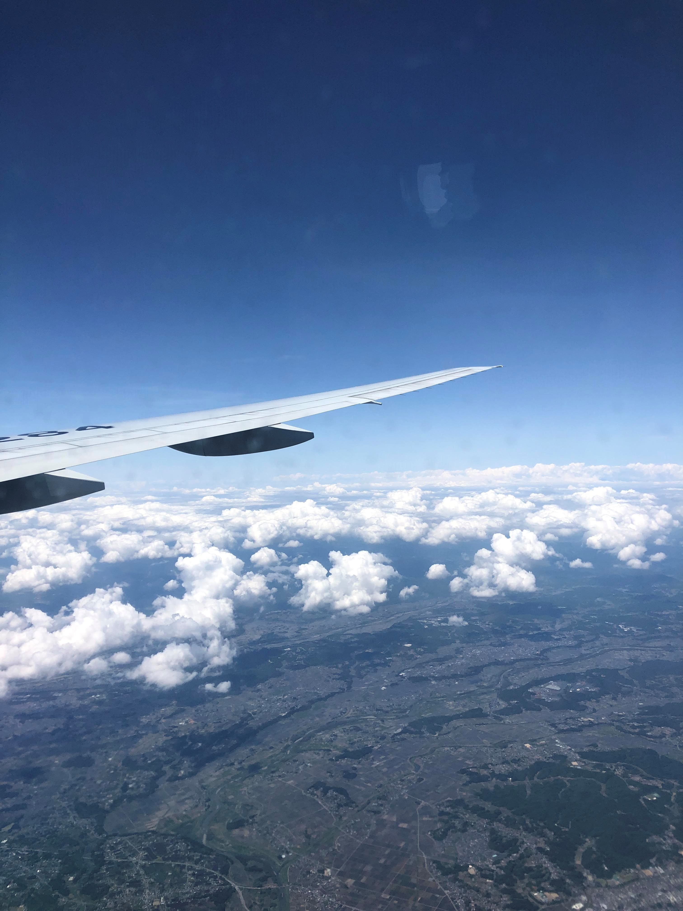
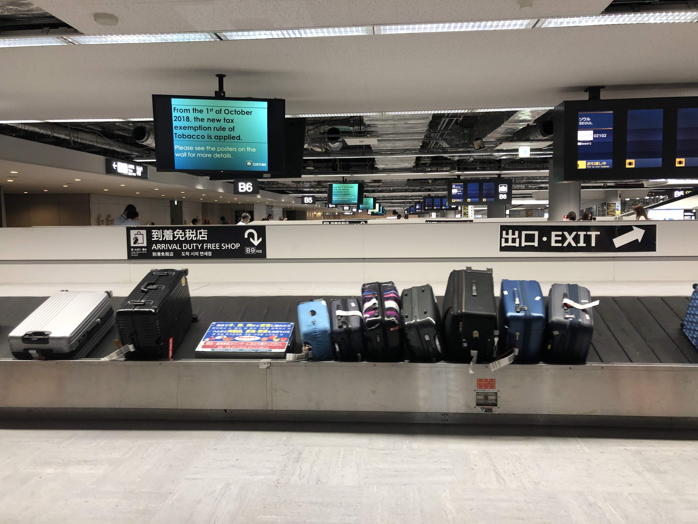
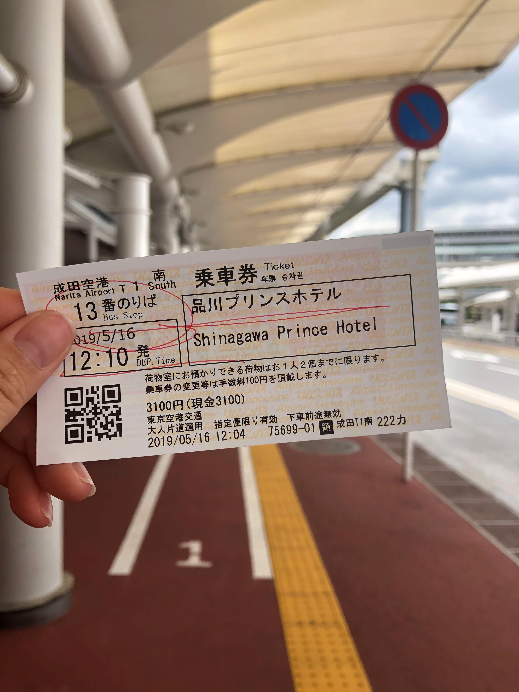

첫째 날 ver.1 [05/16 ~ 05/20]
과거 일본에서 살았던 각자의 추억을 가지고 공통의 추억을 만들기 위해 찾아간 도쿄여행♥
언제가도 참 변함없는 매력적인 도쿄 관광보다는
그냥 일상생활 속 오랜만에 좀 더 먼곳으로 마실 나가는 듯한 느낌의 여행
2년 만에 가는 도쿄
매 년 습관처럼 찾아갔었는데 어쩌다 보니 2년 만에 찾게 된 도쿄…
도쿄가는 길은 뭔가 여행, 해외 이런 느낌보다는
뭔가 익숙한 곳에 나 왔다간다 이렇게 안부인사하는 느낌으로 찾아가는 곳이였는데
아침 9시 비행기라서 새벽부터 바지런히 움직였더니
예전같지 않은 체력에 라운지가서 허기진배를 달래면서 조금 쉬다보니 벌써 비행기를 타야되는 시간.
오랜만에 도쿄라는 행선지가 기분을 굉장히 업!업!업!시키네요!^^
    
2시간 좀 남짓 비행하니 도착한 나리타 공항
각 나라의 공항에 도착하면 그 나라별 특유의 느껴지는 공항 냄새가 있는데 혹시 공감하시나요? ㅎㅎㅎ
일본도 그 특유의 공항냄새가 있는데 정말로 오랜만에 느끼는 이 냄새… 뭔가 아련하고 반갑고 그랬답니다.
가지런하게 정리된 수하물에 역시 일본스럽다면서 생각보다 입국수속 절차와 짐이 빨리 찾아져
시나가와 프린스 호텔 도착 하는 12:10 출발 리무진을 탔답니다.
이렇게 시간 타이밍이 딱딱 잘 맞춰지는 것 만큼 땡잡은 듯한 이느낌 저만 그런거 아니죠??
  